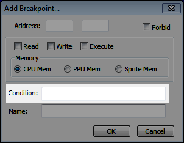
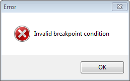

Содержание
В окне создания/редактирования брейкпоинта можно вводить, изменять и удалять дополнительные условия в поле ввода Condition. Эти условия помогают отсеять ненужные срабатывания брейкпоинта, или чтобы сделать брейкпоинт еще более точным (что в принципе одно и тоже).

Чтобы условие в поле ввода Condition было проверено Debugger'ом, вначале должно быть выполнено условие на адрес, на тип адреса и на тип брейкпоинта. Если хотя бы одно из них не выполняется, брейкпоинт не сработает в любом случае.
Если условие было введенно неправильно, то при попытке сохранить такой брейкпоинт вылезет окно с ошибкой.

Выбери опцию для отображения информации по параметрам условия.
| Операнды условия | Операторы сравнения | Арифметические операторы | Логические операторы |
В примерах используется оператор сравнения "==", означающий "равенство". Он часто применяется на практике.
Записываются заглавной латинской буквой - A, X и Y. Например, A == #F9.
Записываются заглавной латинской буквой - N, V, U, B, D, I, Z и C. Например, C == #00.
Поскольку у флага может быть лишь состояние 0 или 1, нужно сравнивать флаг с байтами #$00 или #$01.
Записываются с префиксом #, цифрами и латинскими буквами (строчными или заглавными). Формат записи - #xx. Лишний ноль слева можно опустить. Например, X == #1A.
При необходимости можно записывать 16-битные байты.
Записываются с префиксом $, цифрами и латинскими буквами (строчными или заглавными). Формат записи - $xxyy. Лишние нули слева можно опустить.
Условие на адрес означает условие на "байт в этом адресе". Например, Y == $03B7.
Можно ставить условия только на адреса NES Memory.
Условие на адрес выполняемой инструкции. Записывается заглавной латинской буквой P. Например, P == #8100.
Условие на младший байт адреса указателя стека. Записывается заглавной латинской буквой S. Например, S == #76.
Номер банка в Debugger'е, указанный слева от адреса инструкции, может отличаться от номера банка маппера.
Позволяет уточнить банк, в котором будет выполняться инструкция, вызывающая срабатывание брейкпоинта.
Записывается заглавной латинской буквой K. Например, K == #00.
Условие автоматически выставляется при добавлении Execute брейкпоинта двойным кликом по адресу слева от инструкции.
Позволяет уточнить банк для чтения/записи байта. Используется с Read и Write брейкпоинтами на диапазоне $8000-$FFFF.
Записывается заглавной латинской буквой T. Например, T == #01.
Условие автоматически выставляется при добавлении брейкпоинта через Hex Editor в NES Memory по адресам $8000-$FFFF.
Используется как удобная альтернатива выставления условия сразу на 3 регистра A, X и Y.
Эти 2 операнда условия не работают в старой версии эмулятора.
Для грубого поиска считываемых/записываемых байтов можно создать Execute брейкпоинт на диапазон $8000-$FFFF и добавить соответствующее условие.
Если инструкция способна вызывать срабатывание как Read, так и Write брейкпоинтов (вроде INC и DEC), для нее можно воспользоваться любым из этих операндов.
Условие для Read брейкпоинтов, позволяет уточнить в условии считываемый байт из указанного адреса.
Записывается заглавной латинской буквой R. Например, R == #4D.
Условие для Write брейкпоинтов, позволяет уточнить в условии записываемый байт в указанный адрес.
Записывается заглавной латинской буквой W. Например, W == #D4.
Чтобы получить полноценное условие, нужно левую часть условия неким образом сравнить с правой частью условия.
При желании можно разделять операторы пробелами слева и справа, но в самом операторе не должно быть пробелов.
Операторы сравнения такие же, как в C-подобных языках программирования.
Записывается как ==. Например, условие N == #00 означает проверку на состояние флага N = 0.
Если состояние флага N будет равно 1, брейкпоинт не сработает.
Записывается как !=. Например, условие A != #99 означает проверку на неравенство A и байта #$99.
Если A будет равен #$99, брейкпоинт не сработает.
Записывается как >. Например, условие X > #CE означает проверку на то, что байт в X больше #$CE.
Если X будет в диапазоне #$00-#$CE, брейкпоинт не сработает.
Записывается как >=. Например, условие X >= #CE означает проверку на то, что байт в X больше или равен #$CE.
Если X будет в диапазоне #$00-#$CD, брейкпоинт не сработает.
Записывается как <. Например, условие Y < #7B означает проверку на то, что байт в Y меньше #$7B.
Если Y будет в диапазоне #$7B-#$FF, брейкпоинт не сработает.
Записывается как <=. Например, условие Y <= #7B означает проверку на то, что байт в Y меньше или равен #$7B.
Если Y будет в диапазоне #$7C-#$FF, брейкпоинт не сработает.
Арифметические операторы используются в комбинации с операторами сравнения, без них условие будет бессмысленным.
Эмулятор корректно вычисляет сравнения по условию даже в том случае, когда результат арифметических операций оказывается больше 255 или меньше 0.
Записываются символами + и -. Например, $0123 + #11 > $0456.
Если сумма байта из $0123 и #$11 будет равна или меньше байта из $0456, брейкпоинт не сработает.
Записывается символом *. Например, A * #02 == #08.
Если байт в регистре A, умноженный на #$02, будет не равен #$08, брейкпоинт не сработает.
Записывается символом /. Например, X / Y != #19.
Если байт в регистре X будет равен #$19 при делении на байт из регистра Y, брейкпоинт не сработает.
Деление целочисленное, то есть результат получится без остатка и с округлением в меньшую сторону.
Старая версия эмулятора зависнет при попытке делить на #$00. В новой версии, по-видимому, результатом деления на #$00 является байт #$00, на который также можно поставить условие.
Записываются символами ( и ). При вычислении условия действуют те же правила, что и в математике - то, что записано в скобках, вычисляется первее, а также операторы * и / имеют приоритет выше, чем операторы + и -.
Например, ($0001 + $0002) * #03 <= $ABCD. Аналогично условию $0001 * #03 + $0002 * #03 <= $ABCD.
Если сумма байтов из $0001 и $0002, умноженная на #$03, больше байта из $ABCD, брейкпоинт не сработает.
Записываются символами [ и ]. Перед скобками ставится символ $. Используется для вычисления адреса наподобие косвенной адресации. Например, #FF != $[$0010 + ($0011 * #100)].
В данном примере для получения адреса внутри скобок вычисляется старший байт из адреса $0011 и младший байт из адреса $0010. Из этих двух байтов составляется итоговый адрес, байт из которого участвует в условии при сравнении с байтом #$FF.
Если байт в вычисляемом адресе будет равен #$FF, брейкпоинт не сработает.
Позволяют объединять и разделять сразу несколько условий.
Логические операторы такие же, как в C-подобных языках программирования. Записываются без пробелов.
Записывается как &&. Позволяет объединить 2 и более условий по принципу "усл1" И "усл2" И "усл3". Если хотя бы одно из этих трех условий не выполняется, брейкпоинт не сработает.
Например, A > #05 && A < #10. По условию A должен быть больше #$05 И меньше #$10 одновременно.
Если A будет в диапазонах #$00-#$05 или #$10-#$FF, брейкпоинт не сработает.
Записывается как ||. Позволяет разделить 2 и более условий по принципу "усл1" ИЛИ "усл2" ИЛИ "усл3". Брейкпоинт сработает, если выполняется хотя бы одно из этих трех условий.
Например, X == Y || Z != #00. По условию X должен быть равен Y ИЛИ состояние флага Z должно быть не равно 0.
Если X не равен Y и состояние флага Z равно 0, брейкпоинт не сработает.
Эти 2 оператора можно комбинировать в еще более серьезное условие, причем у оператора && приоритет выше, чем у ||.
Условие в формате "усл1" ИЛИ "усл" И "усл3" ИЛИ "усл4" И "усл5" будет выполнено только в том случае, если будет выполнено ("усл1" или "усл2") + ("усл3" или "усл4") + "усл5".
Например, A > #05 && A < #10 && X == Y || Z != #00. Такое общее условие будет выполнено лишь в том случае, если будет верно условие (A > #05) + условие (A < #10) + условие (X == Y || Z != #00).
Если A будет в диапазоне #$00-#$05, или если A будет в диапазоне #$10-#$FF, или если (X не равен Y и состояние флага Z равно 0), брейкпоинт не сработает.
Чтобы повысить приоритет оператора ||, воспользуйся круглыми скобками.
Например, (X == #01 && Y == #02) || (X == #10 && Y == #20).
Если X не равен #$01 и Y не равен #$02, или если X не равен #$10 и Y не равен #$20, брейкпоинт не сработает.